5. 소프트웨어 공학의 시작
소프트웨어가 하드웨어의 일부였던 시절
1960년대까지 소프트웨어는 하드웨어의 일부분에 불과했다. 컴퓨터와 주변 기기는 방 하나를 가득 채울 만큼 컸고, 값이 비쌌으며, 운영에도 많은 비용과 인력이 필요했다. 소프트웨어는 아직 독립된 공학 분야로 널리 인정받지 못했다.
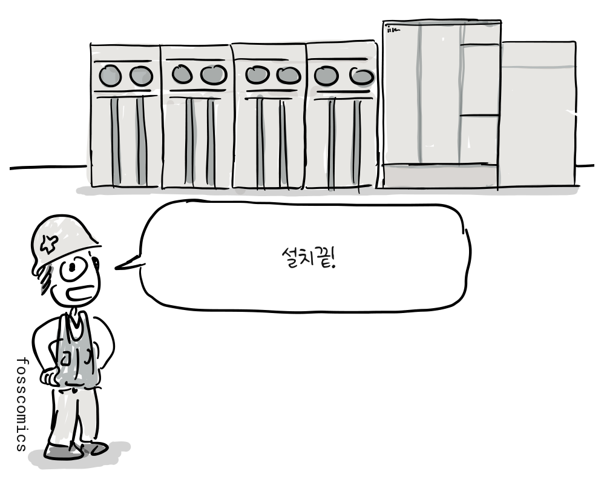
“설치끝!”
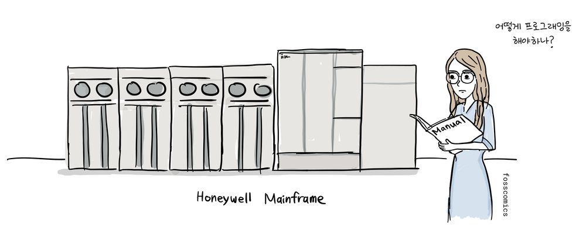
“어떻게 프로그래밍을 해야하나?”
초기 컴퓨팅에서 수학은 중심적인 역할을 했고, 자연스럽게 수학을 전공하는 학생들이 프로그래밍을 시작하는 경우가 많았다.
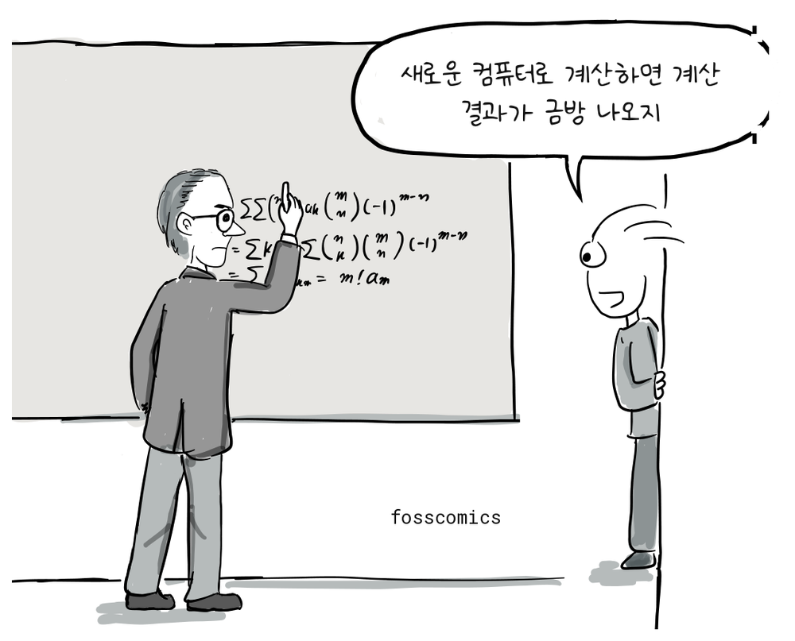
“새로운 컴퓨터로 계산하면 계산 결과가 금방 나오지”
기존에 손으로 하던 수학 계산, 각종 실험을 컴퓨터로 할 수 있었기 때문에 자연과학이나 공학을 전공하는 사람들도 프로그래밍을 배웠다. 그중에는 프로그래밍에 깊이 빠져 아예 프로그래머를 직업으로 삼은 사람도 있었다.
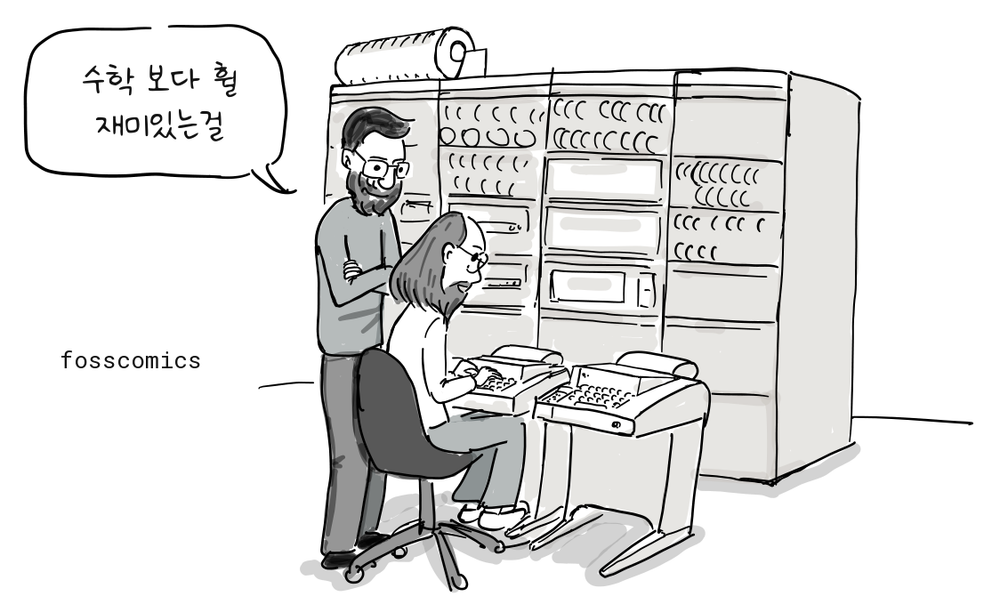
“수학 보다 훨 재미있는걸”
C와 유닉스를 만든 데니스 리치는 대학에서 물리학과 응용수학을 공부했다.
마거릿 해밀턴과 아폴로 비행 소프트웨어
1960년대 아폴로 프로젝트에 참여한 마거릿 해밀턴의 이야기를 들어보면 그 당시 소프트웨어 개발 환경과 인식을 잘 알 수 있다. 대학에서 수학을 공부한 그녀는 남편의 학업을 뒷받침하기 위해 MIT에서 프로그래머로 일을 시작했다.
“수학 전공자도 프로그래머가 될 수 있다고?”
처음에는 기상학자 에드워드 로렌츠와 함께 날씨 예측 소프트웨어를 만들었고, 이후 SAGE 방공 프로젝트에 참여했다. 당시에는 컴퓨터 과학과 소프트웨어 공학을 정규 과정에서 배우기 어려웠기 때문에 프로그래머들은 대부분 실무를 통해 일을 익혔고, 소프트웨어 개발도 기존 공학 분야만큼 진지하게 받아들여지지 않았다.
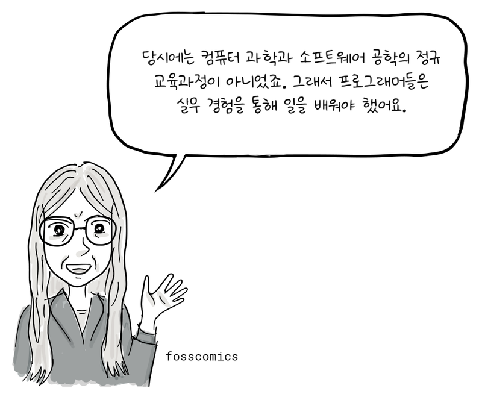
“당시에는 컴퓨터 과학과 소프트웨어 공학의 정규 교육과정이 아니었죠. 그래서 프로그래머들은 실무 경험을 통해 일을 배워야 했어요.”
해밀턴은 시스템 프로그래밍 전문가가 된 뒤 MIT Instrumentation Laboratory에 합류했다. 그곳에서 아폴로 사령선과 달 착륙선의 탑재 비행 소프트웨어를 개발한 Software Engineering Division을 이끌었다[4]. 아폴로 프로젝트 초기에는 소프트웨어 개발을 위한 예산과 일정, 요구 사항이 제대로 고려되지 않았다[1]. 하지만, 소프트웨어는 우주선 비행과 달착륙선을 제어할 만큼 중요한 역할을 맡았고, 마거릿은 좀 더 신뢰성 높은 소프트웨어를 개발하기 위해 딸을 데리고 주말에 출근하기도 했다.
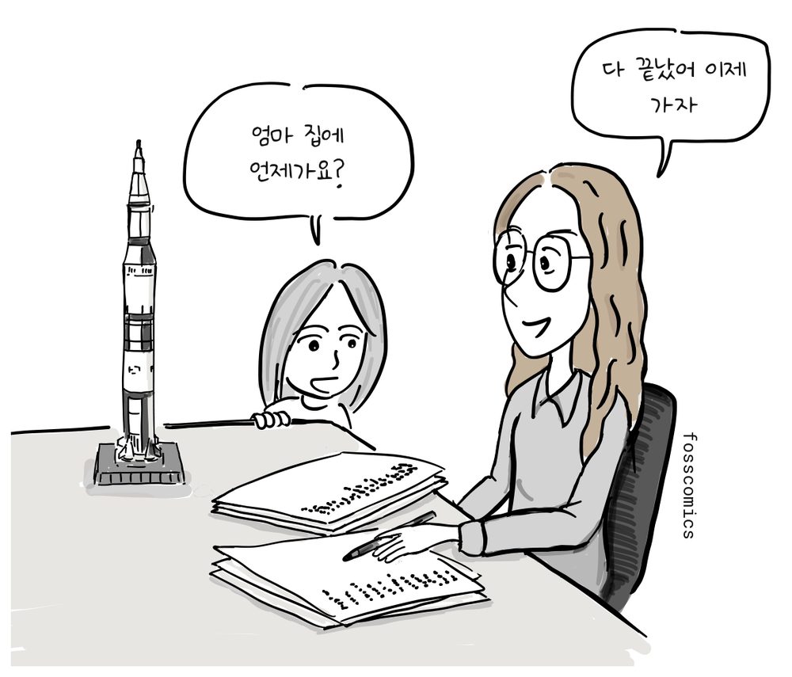
“엄마 집에 언제가요?”
“다 끝났어 이제 가자”
1960년대 후반에는 아폴로 유도 시스템과 소프트웨어 개발에 약 400명이 참여한 것으로 알려져 있다[1]. 이들의 노력에 힘입어 1969년 아폴로 11호는 달 착륙에 성공했다.
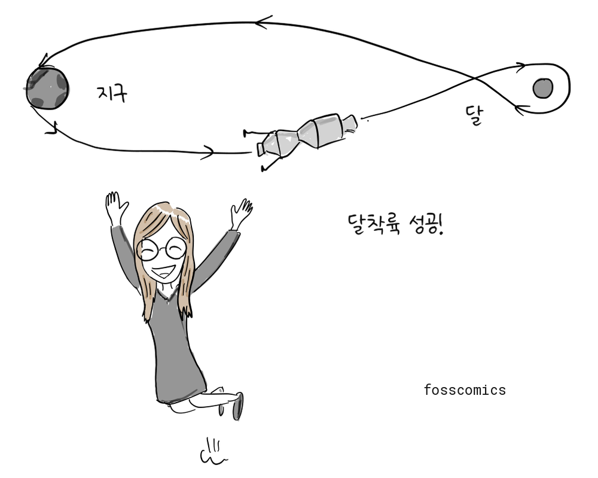
“달착륙 성공!”
해밀턴은 소프트웨어도 하드웨어 공학과 같은 전문적 위상을 가져야 한다고 주장하며 소프트웨어 공학이라는 용어를 널리 알렸다. 그녀가 이 용어를 처음 만들었는지를 두고는 자료마다 설명이 다르지만, 이 개념을 정착시키는 데 기여했다[4].
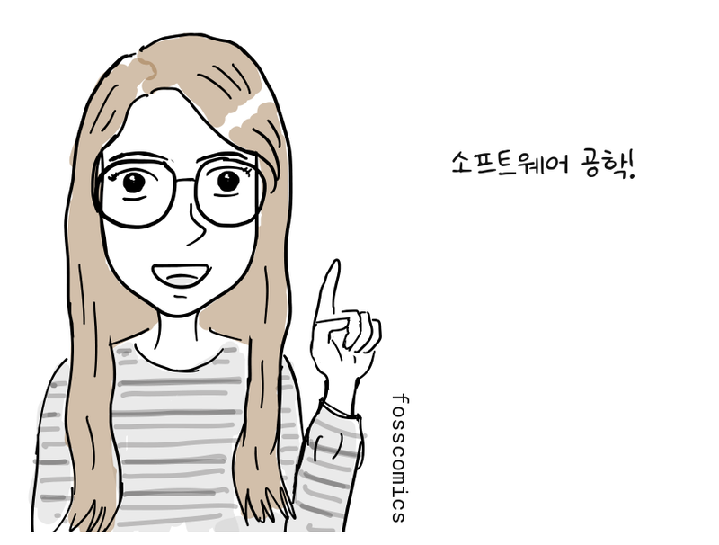
“소프트웨어 공학!”
초기 프로그래밍을 이끈 여성들
흥미로운 사실은 1960년대까지 소프트웨어 개발자 상당수가 여성이였는데, 지금의 현실과 비교하면 상당한 차이가 있다. 그 이유는 당시에는 소프트웨어 개발이 하드웨어 개발 보다 덜 중요한 일로 취급되어 여성들이 주로 맡게 되었고 급여 수준도 낮았다[2]. 이러한 이유로 인터넷에서 초기 컴퓨터 사진을 찾아보면 유독 여성이 컴퓨터 앞에 있는 모습을 많이 볼 수 있다.
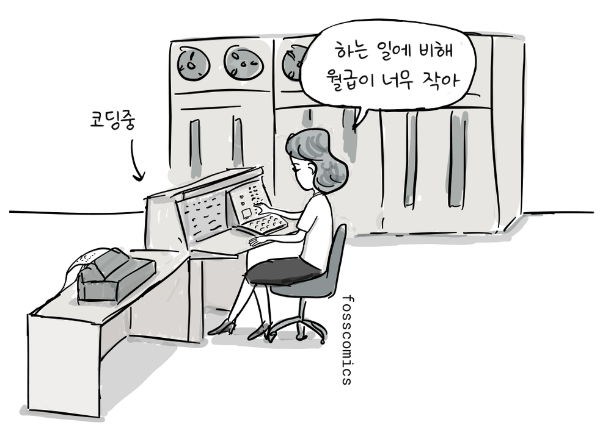
“하는 일에 비해 월급이 너무 작아”
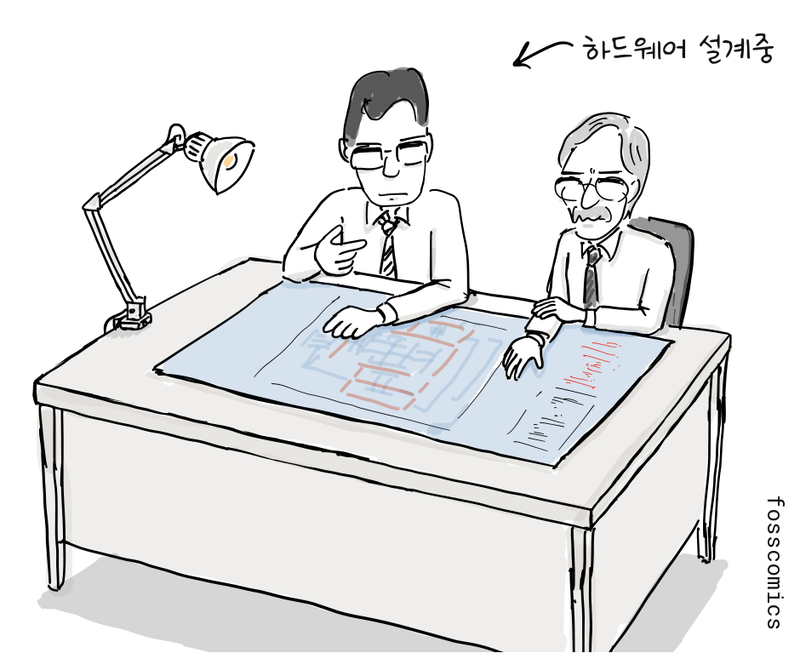
에니악에 처음 배정된 프로그래머 여섯 명은 모두 여성이었다[3].

그레이스 호퍼와 컴퓨터 버그
수학 박사였던 그레이스 호퍼는 선구적인 여성 프로그래머로, 훗날 초기 컴파일러 가운데 하나를 개발했다. 1947년 호퍼가 하버드 Mark II 팀에서 일하던 중 컴퓨터에 문제가 생겼다.
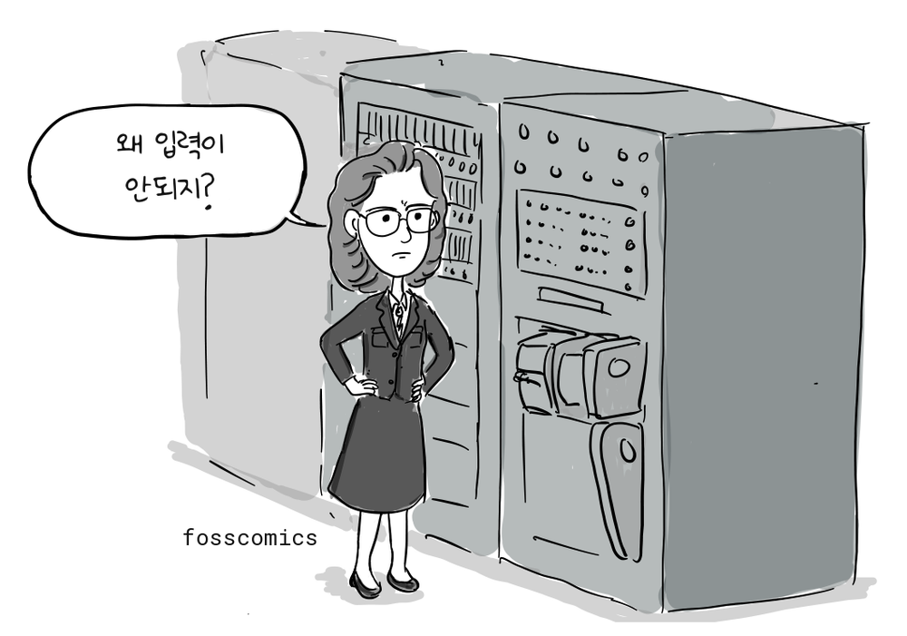
“왜 입력이 안되지?”
Mark II 팀은 기계의 릴레이 가운데 하나에 나방이 끼어 있는 것을 발견했다.
“릴레이 안에 나방이 죽어 있네”
그리고 나방을 로그북에 붙이고 First actual case of bug being found라고 적었다. 기술적 결함을 뜻하는 bug라는 말은 이 사건보다 훨씬 전부터 쓰였지만, 호퍼와 Mark II 팀은 컴퓨팅 분야에서 bug와 debugging이라는 말을 널리 알리는 데 기여했다[5].
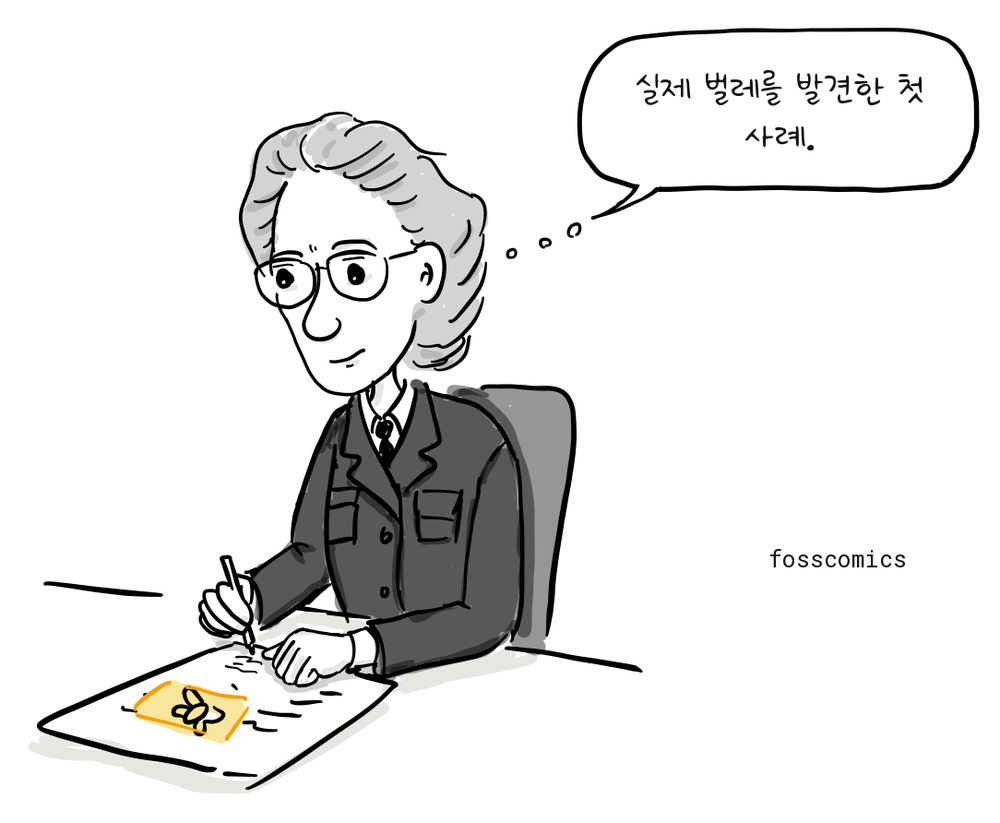
“실제 벌레를 발견한 첫 사례.”
이처럼 여성들은 초기 프로그래밍에서 선구자적인 역할을 했고, 소프트웨어 공학의 토대를 세우는 데 기여했다.

참고 자료
- 인류를 달에 보낸 코드, 그리고 소프트웨어 자체를 발명하다, 와이어드
- 컴퓨터 프로그래밍은 여성의 일이었다, 스미스소니언 매거진
- 여성 에니악 프로그래머들은 소프트웨어 산업을 어떻게 개척했나, 인텔 iQ
- 마거릿 해밀턴의 아폴로 코드, NASA
- 컴퓨터 버그가 기록된 로그북, 스미스소니언 국립 미국사 박물관
- 카오스 이론의 숨은 여성 개척자들, 콴타 매거진